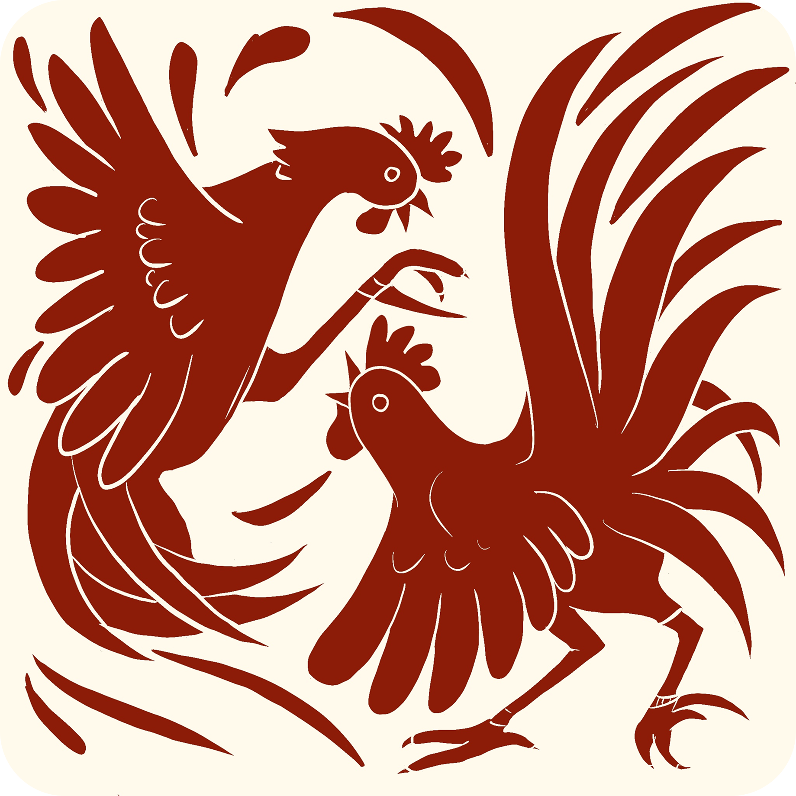

The weapons of tiny warriors in Tulu Nadu

Enter carefully! This room holds the weapons of tiny warriors.
This small, sharp blade is called "Balu," and it was tied to a fighting cock's leg during a match. But don't think it was just tied on carelessly — creating and attaching this blade was serious business.
Special craftsmen would make these blades one by one, with incredible care. Each blade was unique and perfectly balanced. The knife had to be sharp enough to be effective, but designed so carefully that it would only strike specific spots — the opponent's eye, neck, or heart. This wasn't about cruelty; it was about skill and precision, like a martial art.
Not just anyone could tie the Baal to a rooster's leg! It required special training and delicate hands. The blade had to be tied at exactly the right angle so that when the rooster lunged forward, it would strike accurately. Tie it wrong, and it wouldn't work. Tie it too tight, and you'd hurt your own rooster. It was all about balance — and knowledge passed down through generations.
There were Vatte Kori and Bante Kori — different types of fighting roosters from different communities. Each had their own style and technique!